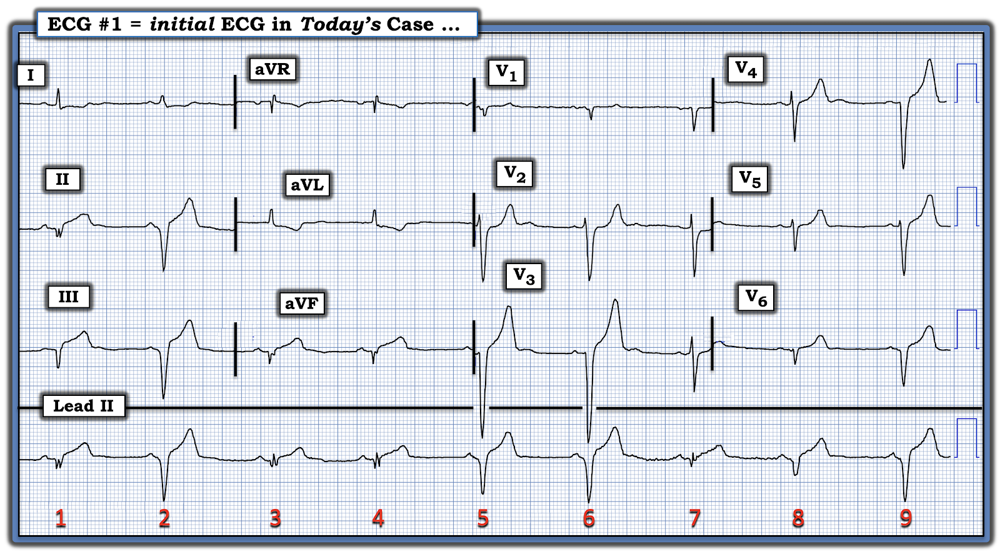
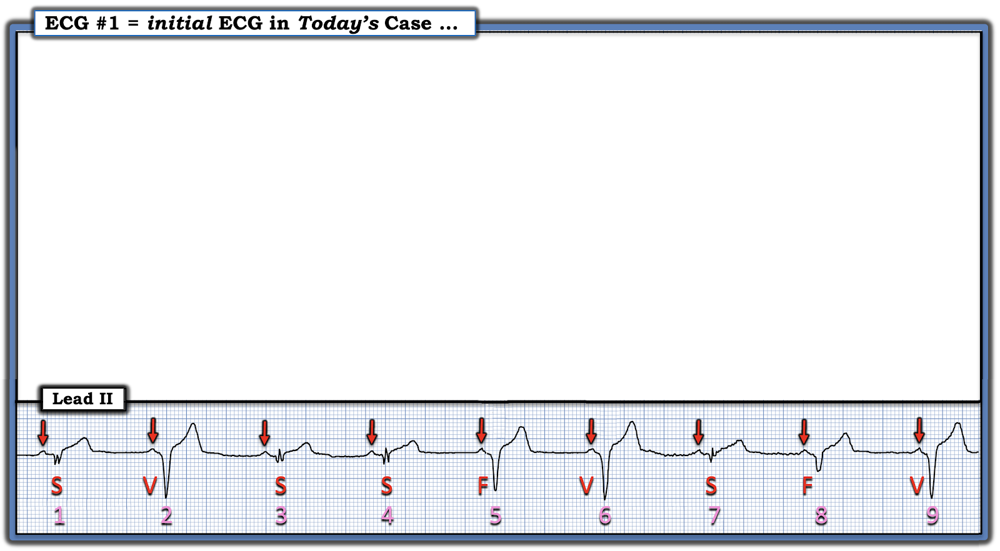
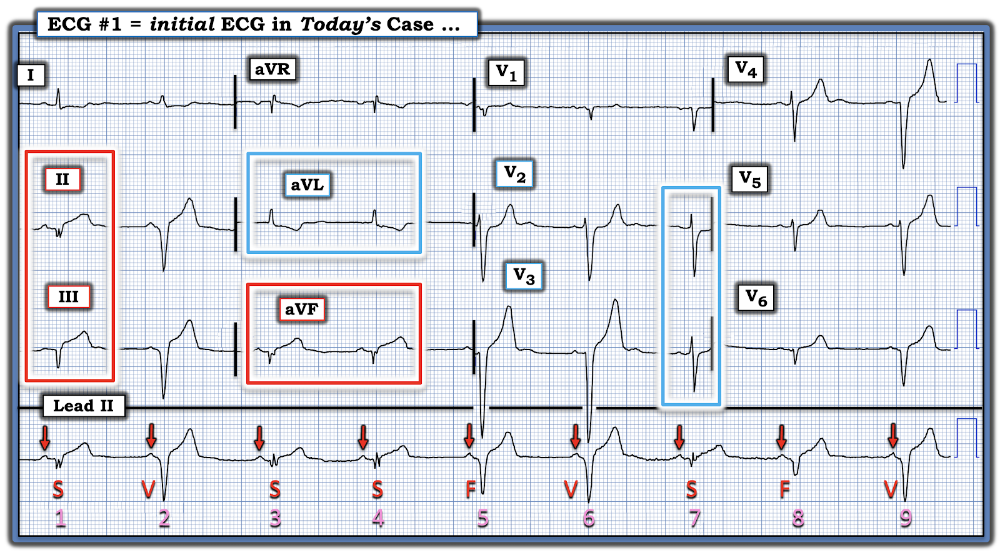
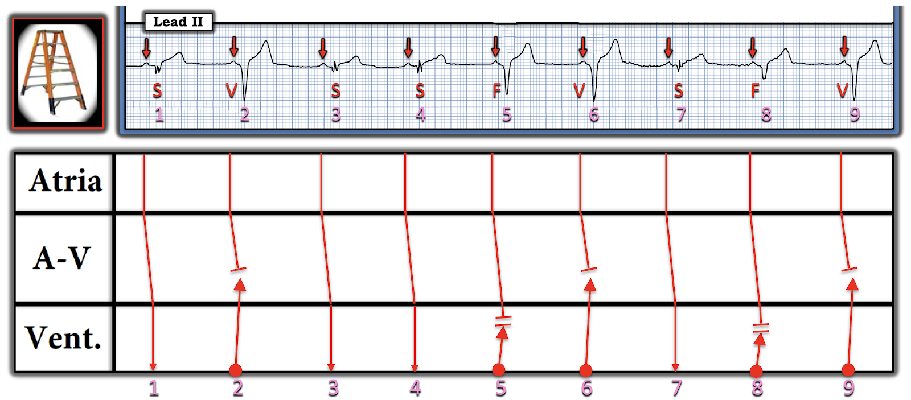

ECG Blog #476 — Những PVC trông kỳ lạ?
Bạn được cho biết rằng điện tâm đồ ở Hình-1 đã dẫn tới 2 cách diễn giải khác nhau giữa các nhân viên y tế cấp cứu. 2 cách diễn giải đó là: i) Các nhát rộng hơn trên dải nhịp dài chuyển đạo II là PVC (ngoại tâm thu thất — Premature Ventricular Contractions); hay, ii) Các nhát rộng hơn (tức là, các nhát #2; 5,6; và #8,9) là PAC (ngoại tâm thu nhĩ — Premature Atrial Contractions) — với QRS giãn rộng là hậu quả của dẫn truyền lệch hướng.
CÂU HỎI:
- Bạn nghiêng về cách diễn giải nào trong 2 cách này?
- BẠN sẽ diễn giải bản ghi này như thế nào?


SUY NGHĨ CỦA TÔI về điện tâm đồ ở Hình-1:
Đây là một bản ghi phức tạp.
- ĐIỂM THEN CHỐT (PEARL) #1: Trong hầu hết các trường hợp — tôi thích bắt đầu đánh giá điện tâm đồ bằng việc xem qua nhịp trước khi tập trung vào bản ghi 12 chuyển đạo (thường nằm ngay phía trên dải nhịp dài). Trình tự này đặc biệt phù hợp với bản ghi hôm nay — vì việc xác định nguyên nhân của 5 nhát rộng hơn trên dải nhịp dài chuyển đạo II là thiết yếu để biết cách diễn giải bản ghi 12 chuyển đạo phía trên nó (Xem lý do ở phần dưới).
- ĐIỂM THEN CHỐT (PEARL) #2: Các nhát rộng hơn ở Hình-1 không phải là PVC (theo cách chúng ta thường dùng thuật ngữ này) cũng không phải là PAC dẫn truyền lệch hướng — vì không nhát nào trong số này xuất hiện sớm hơn dự kiến quá một chút rất nhỏ (tức là, các nhát này không “sớm” theo nghĩa thông thường là xuất hiện sớm rõ rệt trong chu kỳ).
ĐIỂM THEN CHỐT (PEARL) #3:
Một trong những cách hữu ích nhất mà tôi thấy giúp nhận ra mối liên quan giữa sóng P và các phức bộ QRS lân cận — đơn giản là đánh dấu các sóng P. Tôi đã làm như vậy ở Hình-2.
- CÂU HỎI: Khoảng PR có giữ hằng định trước mỗi nhát trong 9 nhát ở Hình-2 không? Nếu không — Tại sao?

TRẢ LỜI:
Khoảng PR có vẻ ngắn lại nhẹ trước mỗi nhát rộng hơn (tức là, trước các nhát #2, 5,6; 8,9).
- Tập trung một lúc vào riêng dải nhịp dài chuyển đạo II — việc khoảng PR giữ hằng định và hơi dài hơn trước các nhát #1; 3,4; và #7 — gợi ý rằng các nhát này được dẫn truyền từ xoang (mà tôi đã đánh dấu là "S" ở Hình-3).
- Các nhát rộng nhất ở Hình-3 — là các nhát #2,6 và #9. Đây là các nhát thất (đánh dấu "V" ở Hình-3) xuất hiện rất muộn trong chu kỳ. Các sóng P đi trước những nhát này với khoảng PR ngắn hơn so với các nhát dẫn truyền từ xoang — đơn giản là không có đủ thời gian để dẫn truyền xuống thất.
- Còn lại các nhát #5 và #8 — có hình dạng QRS trung gian giữa các nhát dẫn truyền từ xoang #1; 3,4; 7 — và các nhát thất #2,6,9. Lưu ý rằng cả hình dạng QRS lẫn hình dạng sóng T của các nhát #5 và #8 đều trung gian giữa các nhát dẫn truyền từ xoang và các nhát thất. Do đó, các nhát #5 và #8 là nhát hỗn hợp (đánh dấu "F" ở Hình-3 — Xem ECG Blog #128 và Blog #129 để biết thêm về nhát hỗn hợp).
- LƯU Ý: Một trong những điều khiến bản ghi hôm nay khó đến vậy — là khoảng P-P (được làm nổi bật bằng các mũi tên ĐỎ) không hằng định trong suốt bản ghi. Thay vào đó, có một loạn nhịp xoang nền ở Hình-3 — khiến việc phân biệt giữa nhát dẫn truyền từ xoang với nhát thất và nhát hỗn hợp trở nên khó hơn (tức là, Do loạn nhịp xoang — khó xác định hơn liệu các nhát thất có xuất hiện "sớm" so với tần số xoang nền hay không).


Quay lại với điện tâm đồ 12 chuyển đạo:
Giờ đây khi đã xác định được những nhát nào trong bản ghi hôm nay được dẫn truyền từ xoang — chúng ta có thể tập trung vào hình dạng ST-T của các nhát xoang này ở từng chuyển đạo trong 12 chuyển đạo để đánh giá thay đổi thiếu máu cục bộ tiềm ẩn (Xem Hình-4).
- Hãy nhớ: Không có bệnh sử lâm sàng nào được cung cấp kèm bản ghi hôm nay — vì vậy chúng ta chưa có dữ kiện nào cho biết tại sao lại có các nhát thất.
CÂU HỎI:
Tập trung ở Hình-4 vào 3 nhát dẫn truyền từ xoang ở các chuyển đạo chi (tức là, các nhát #1,3,4) — BẠN nghi ngờ lý do gì gây ra các nhát thất trên dải nhịp dài chuyển đạo II?


TRẢ LỜI:
Để dễ đánh giá sóng ST-T của các nhát dẫn truyền từ xoang ở các chuyển đạo chi — tôi đã khoanh nhát #1 (ở các chuyển đạo II,III) — và các nhát #3,4 (ở chuyển đạo aVF) trong các hình chữ nhật ĐỎ.
- Các phức bộ QRS ở mỗi chuyển đạo thành dưới này cho thấy sóng QS (bị phân mảnh ở các chuyển đạo II và aVF) và sóng ST-T tối cấp (với đoạn khởi đầu ST thẳng đuỗn, đáy sóng T rộng ra — và ST chênh lên một ít).
- Điều xác nhận các thay đổi ST-T ở chuyển đạo thành dưới này là thật và chỉ điểm một OMI thành dưới cấp — là ST chênh xuống soi gương thấy ở chuyển đạo aVL (và ở chuyển đạo I với mức độ ít hơn) có hướng đối nghịch.
CÂU HỎI:
Tập trung ở Hình-4 vào 1 nhát dẫn truyền từ xoang ở các chuyển đạo trước tim ( = nhát #7) — Có bằng chứng của OMI thành sau không? (trong hình chữ nhật XANH ở các chuyển đạo V2 và V3)?
====================================
TRẢ LỜI:
Dù hoàn toàn thừa nhận câu trả lời cho câu hỏi này tinh tế đến mức nào (tức là, vì chỗ chuyển chuyển đạo chỉ cho phép chúng ta thấy một phần nhỏ sóng ST-T của nhát #7) — nhiều khả năng có kèm OMI thành sau vì: i) Đoạn ST của nhát #7 ở chuyển đạo V2 có vẻ dẹt, thậm chí hơi chênh xuống (trong khi bình thường có ST chênh lên nhẹ, dốc lên ở các chuyển đạo V2,V3); và, ii) Xét việc OMI thành sau đi kèm OMI thành dưới thường xuyên đến mức nào — với tôi, ST dẹt và chênh xuống tinh tế này là đủ để gợi ý mạnh có kèm OMI thành sau.
- ĐIỂM THEN CHỐT (PEARL) #4 (Điểm nâng cao): Dù hoàn toàn thừa nhận rằng đánh giá thiếu máu cục bộ dựa trên hình dạng ST-T của các nhát thất khó hơn nhiều — tôi thấy sóng T của các nhát thất và của các nhát hỗn hợp (tức là, các nhát #5,6; 8,9) cao hơn dự kiến một cách không tương xứng! Điều này gợi ý rằng các sóng T cao không tương xứng ở chuyển đạo trước tim của những nhát thất này là sóng T tái tưới máu thành sau.
- Do đó, sóng QS sâu ở các chuyển đạo thành dưới phù hợp với những gì có vẻ là một nhồi máu dưới-sau đã hình thành.
- ĐIỂM THEN CHỐT (PEARL) #5 — Như đã bàn trong ECG Blog #108 — AIVR (nhịp tự thất gia tốc — Accelerated IdioVentricular Rhythm) là một rối loạn nhịp tái tưới máu thường gặp. Sự xuất hiện của PVC muộn trong chu kỳ (tức là, cuối tâm trương) là một hiện tượng tương tự, thường thấy khi tái tưới máu tự phát, hoặc khi động mạch "thủ phạm" được tái tưới máu nhờ điều trị bằng PCI hoặc thuốc tiêu sợi huyết.
KẾT LUẬN:
Điện tâm đồ hôm nay gợi ý OMI dưới-sau mới xảy ra (và/hoặc đang tiếp diễn) — kèm các dấu hiệu tái tưới máu trên điện tâm đồ, dưới dạng sóng T ở chuyển đạo trước tim cao hơn dự kiến và các nhát thất muộn trong chu kỳ.
- Không có PAC — vì không có sóng P đến sớm.
- Do các khoảng P-P và R-R hơi thay đổi — không thể biết liệu một số nhát thất có thể là "sớm" hay không. Nhưng không có PVC theo nghĩa thông thường.
- XIN NHẤN MẠNH: Đây là một bản ghi rất khó. NHƯNG — Nếu xem xét tất cả các "phần" của bản ghi này, chúng ta có thể ghép lại thành một "câu chuyện" thực sự hợp lý.
- ĐIỂM THEN CHỐT (PEARL) #6: Mỗi khi thấy AIVR và/hoặc nhát thất muộn trong chu kỳ — tôi nghĩ đến khả năng nhồi máu mới xảy ra, nay đã được tái tưới máu (đó chính xác là những gì chúng ta thấy trong ca hôm nay).
====================================
Giản đồ bậc thang (laddergram):
Giản đồ bậc thang tôi đề xuất cho điện tâm đồ hôm nay được trình bày ở Hình-5.
- Các nhát #1, 3,4; 7 được dẫn truyền từ xoang.
- Tôi đã vẽ giản đồ bậc thang với giả định rằng các nhát #2, 6 và 9 là nhát thất thuần túy.
- Tôi đã vẽ các nhát #5 và 8 là nhát hỗn hợp, trong đó sóng P trước nhát #8 đi sâu vào thất hơn một chút so với sóng P trước nhát #5. Kết quả là — nhát #8 trông giống các nhát dẫn truyền từ xoang hơn.
- Lưu ý: Tôi không thể loại trừ khả năng có một mức hỗn hợp nhỏ ở 3 nhát thất còn lại, vì chúng ta không biết một nhát thất xuất hiện trước sóng P lân cận sẽ trông như thế nào.


==================================
Lời cảm ơn: Tôi xin cảm ơn các bác sĩ 黄建成, 许惠洋 và Kianseng Ng (đến từ Malaysia) đã chia sẻ ca bệnh và bản ghi này.
==================================
Các bài ECG Blog liên quan đến ca hôm nay:
- ECG Blog #205 — Ôn lại Cách tiếp cận hệ thống của tôi khi đọc điện tâm đồ 12 chuyển đạo (tóm lược ở Hình-2 và -3, và là chủ đề của Audio Pearl MP-23 trong Blog #205).
- ECG Blog #184 — minh họa mối quan hệ đối nghịch như hình ảnh soi gương "kỳ diệu" khi thiếu máu cục bộ cấp giữa chuyển đạo III và chuyển đạo aVL (được trình bày trong Audio Pearl #2 ở bài viết này).
- ECG Blog #218 — Ôn lại CÁCH xác định một sóng T là tối cấp?
- ECG Blog #108 và ECG Blog #321 — để biết thêm về AIVR.
- ECG Blog #128 và ECG Blog #129 — để biết thêm về nhát hỗn hợp.